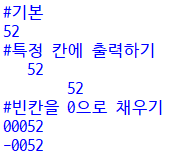
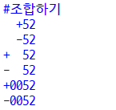
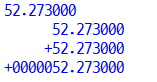
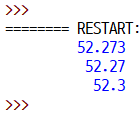

[02-4] 숫자와 문자열의 다양한 기능
#문자열의 fotmat() 함수: "{}".format()
-중괄호 개수=함수 괄호 안 매개변수 개수
-{}기호를 format 괄호 안 매개변수로 대체 --> {} 기호 앞, 뒤, 사이 문자열 삽입 가능
□예제
format_basic.py |
|
#format() 함수로 숫자를 문자열로 변환하기 string_a="{}".format(10) #출력하기 print(string_a) print(type(string_a)) |
10 <class 'str'> |
|
#format() 함수로 숫자를 문자열로 변환하기 format_a="{}만 원".format(5000) format_b="파이썬 열공하여 첫 연봉 {}만 원 만들기".format(5000) format_c="{} {} {}".format(3000, 4000, 5000) format_d="{} {} {}".format(1, "문자열", True) #출력하기 print(format_a) print(format_b) print(format_c) |
print(format_d)
|
5000만 원 파이썬 열공하여 첫 연봉 5000만 원 만들기 3000 4000 5000 1 문자열 True |
|
#정수 output_a="{:d}".format(52) #특정 칸에 출력하기 output_b="{:5d}".format(52) #5칸 output_c="{:10d}".format(52) #10칸 #빈칸을 0으로 채우기 output_d="{:05d}".format(52) #양수 output_e="{:05d}".format(-52) #음수 print("#기본") print(output_a) print("#특정 칸에 출력하기") print(output_b) print(output_c) print("#빈칸을 0으로 채우기") print(output_d) print(output_e) |
 |
|
#기호와 함께 출력하기 output_f="{:+d}".format(52) #양수 output_g="{:+d}".format(-52) #음수 output_h="{: d}".format(52) #양수: 기호 부분 공백 output_i="{: d}".format(-52) #음수: 기호 부분 공백 print("#기호와 함께 출력하기") print(output_f) print(output_g) print(output_h) print(output_i) |
|
#기호와 함께 출력하기 +52 -52 52 -52 |
|
#조합하기 output_h="{:+5d}".format(52) output_i="{:+5d}".format(-52) output_j="{:=+5d}".format(52) output_k="{:=+5d}".format(-52) output_l="{:+05d}".format(52) output_m="{:+05d}".format(-52) print("#조합하기") print(output_h) print(output_i) print(output_j) print(output_k) print(output_l) print(output_m) |
 |
|
output_a="{:f}".format(52.273) output_b="{:15f}".format(52.273) # 15칸 만들기 output_c="{:+15f}".format(52.273) # 15칸에 부호 추가하기 output_d="{:+015f}".format(52.273) # 15칸에 부호 추가하고 0으로 채우기 print(output_a) print(output_b) print(output_c) print(output_d) |
|  |
|
output_a="{:15.3f}".format(52.273) output_b="{:15.2f}".format(52.273) output_c="{:15.1f}".format(52.273) print(output_a) print(output_b) print(output_c) |
 |
|
output_a=52.0 output_b="{:g}".format(output_a) print(output_a) print(output_b) |
52.0 52 |
|
ex) >>> print(input_a) 안녕하세요 문자열 함수를 알아봅니다 |
>>> print(input_a.strip()) 안녕하세요 문자열 함수를 알아봅니다 |